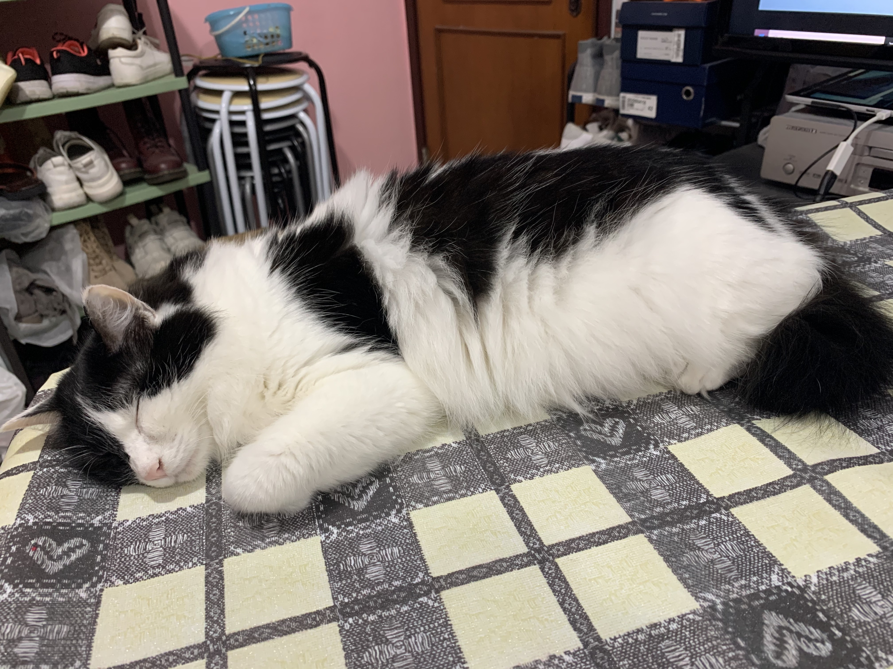
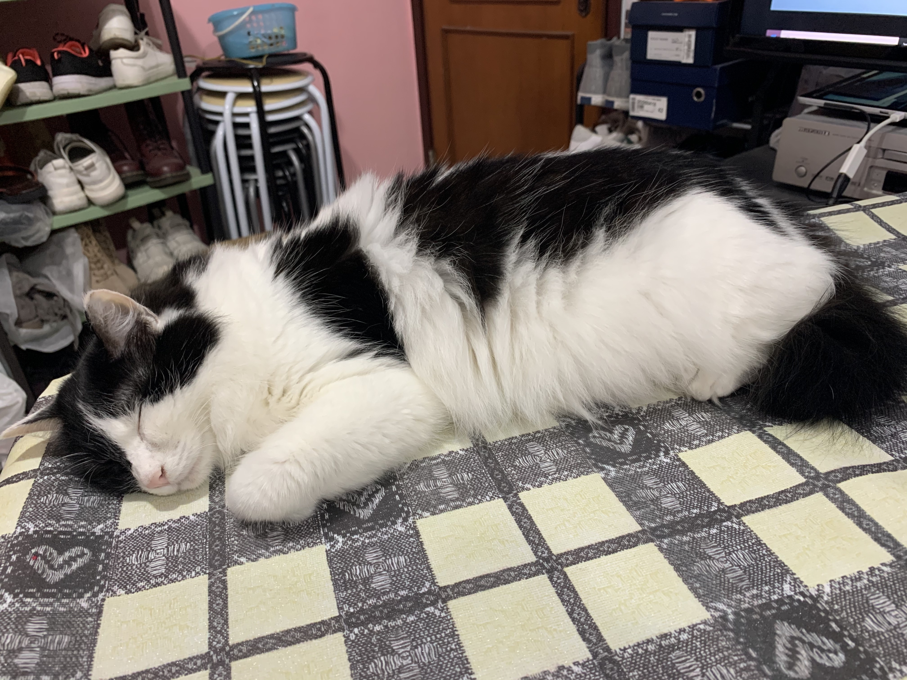

Hello, I'm Bennis 🤠
I love traveling, making new friends, enjoying good food (of course!!) and my CAT!
Traveling
I have only been to a few countries in Asia including Thailand, Taiwan, Malaysia, Vietnam and Cambodia.
Only these? I know, right? You might wonder how often I travel. Actually, quite often! Yet, I keep going back to Thailand and Taiwan three to four times a year. Ha!
Therefore, I am planning to explore some new countries! Wait, COVID-19! Let's just wait then....
Meeting People
I talk a lot! It's a great quality to have for meeting people and making new friends. Try! 😈
Enjoying Good Food
Oh yeh! Who doesn't like good food 😋 . That's what I work hard for!
My Cat, Little Cow
Doesn't she just look like a fluffy cow - white with black patches 🐄
 
